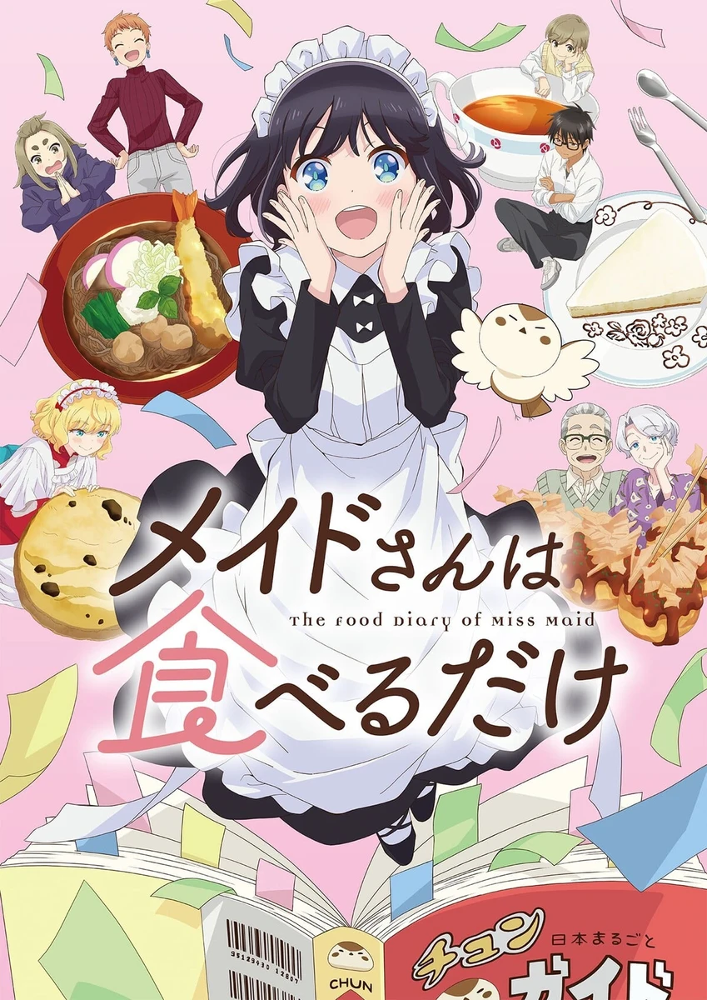

COMPLETE RECORD · Pages 轻量资料
女仆小姐的贪吃日常
メイドさんは食べるだけ
别名
- 女僕小姐的貪吃日常
- The Food Diary of Miss Maid
- Maid-san wa Taberu dake
- 形式
- TV
- 首播
- 2026-04-05
- 集数
- 12 集
- 评分
- 5.8
- 评分人数
- 811
SYNOPSIS
简介
原先在英国宅邸担任女仆的雀，基于某些原因来到日本小公寓展开新生活。 尽管有许多需要操心的事情，不过对日本食物充满好奇的雀，潇洒地离开公寓去寻找美食…… 从「我开动了」到「谢谢招待」，跟着可爱女仆的脚步，展开日本平民美食之旅吧！
英国のお屋敷でメイドとして働くスズメは、ある出来事により、日本の一角にある小さなアパートで新生活を始めることに。初めての日本での一人暮らしに、たくさん心配事もあるけれど、スズメは日本の食べ物に興味津々。颯爽とアパートを飛び出すと様々な食べ物や人々との出会いも。食べるだけを見てるだけ。それがこんなにも幸せ！非日常なメイドさんがおくるほのぼの日常アニメはじまります!!
EPISODE LOG
正片章节
已收录 12 条正片章节
- 1鲷鱼烧/章鱼烧/团子/超商饭团/年轮蛋糕 首播：2026-04-05时长：24 分钟
- 2冰棒/甜茶/小馒头/桔梗信玄饼/波萝面包 首播：2026-04-12时长：24 分钟
- 3配菜/咖喱调理包/蚕豆/腌渍小菜/运动饮料 首播：2026-04-19时长：24 分钟
- 4饼干/红豆面包/柠檬水/炸鸡 首播：2026-04-26时长：24 分钟
- 5霜淇淋/梅酒/麦茶/可丽饼/生蛋盖饭 首播：2026-05-03时长：24 分钟
- 6鳗鱼饭/凉拌豆腐/祭典 首播：2026-05-10时长：24 分钟
- 7刨冰/起司蛋糕/温水/杯面 首播：2026-05-17时长：24 分钟
- 8新米/咖哩饭/烤地瓜/葡萄/炸肉饼 首播：2026-05-24时长：24 分钟
- 9味噌汤/银杏/万圣节 首播：2026-05-31时长：24 分钟
- 10千岁糖/玉米浓汤/爬山/蜜柑/肉包 首播：2026-06-07时长：24 分钟
- 11德式圣诞蛋糕/柿子/柚子/圣诞蛋糕 首播：2026-06-14时长：24 分钟
- 12煎饺/萝卜干/袋装泡面/跨年荞麦面 首播：2026-06-21时长：24 分钟